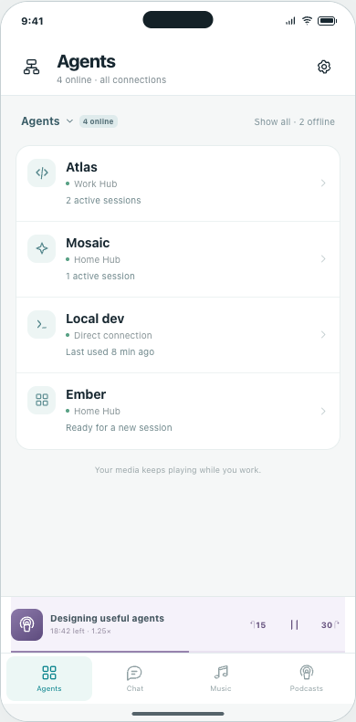
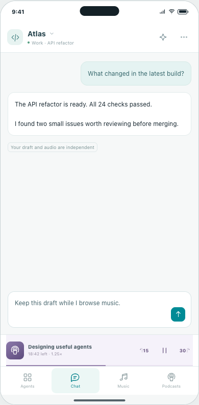

SELECTED CONCEPT 05 / REFINEMENT
Agents when browsing.
Just the agent when chatting.
One header per screen. The app header disappears in Chat—there is no second title bar or empty spacer above the agent’s own interface.
APP HEADER · AGENTS
Connections and app Settings live here.
“Agents” replaces “Nodes”.

AGENT’S OWN HEADER · CHAT
The conversation uses its own web header.
No app-level Chat title, gear, or duplicate controls.

Navigation staysAgents · Chat · Music · Podcasts
Playback staysOnly while an audio item is active
The draft staysSwitching tabs does not reset the conversation